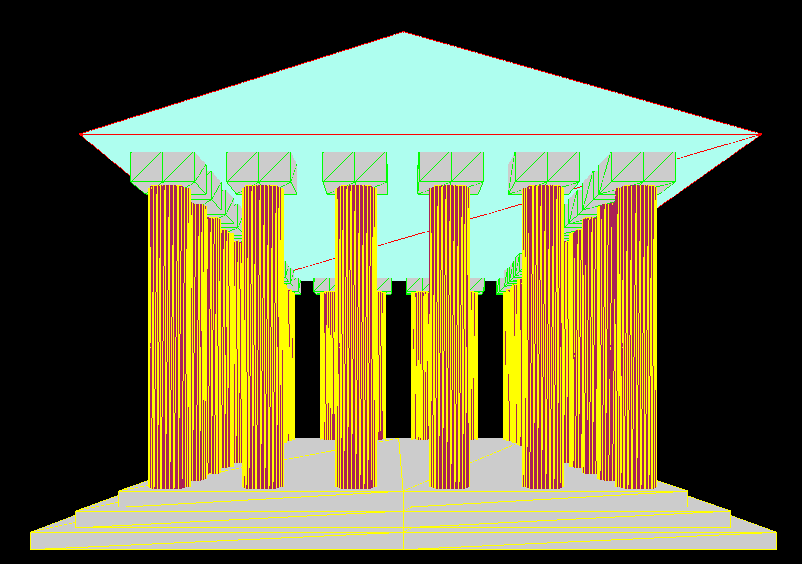

Welcome to GTT
G.T.T. is a program that allows you to explore a 3D model of an ancient Greek temple.

Description
In this program you can visit a 3D model of a Greek temple, using keyboard. You can move on the right, on the left, foreward, backward, up and down, inside and outside the model.
The Idea
I had the idea of this project thinking how much I would have liked to visit a greek temple, so I decided to try to recreate this experience in a virtual way.
Languages, libraries and tools
To program G.T.T. I used HTML 5 and Javasript, in particular Javascript libraries Three.js (graphics) and dat.gui (interface).
I utilized Notepad++ to write GTT scripts and a browser to run it.
Commands
This is the list of keys to use:
Movement
- W ==> move foreward on perspective axis
- S ==> move backward on perspective axis
- A ==> move left
- D ==> move right
- Space bar ==> move up
- Shift ==> move down
Perspective
- I ==> perspective up
- K ==> perspective down
- J ==> perspective left
- L ==> perspective right
Support or Contact
Having trouble with this page? Contact
marco dot github at other dot bugfree dot it
Documentation
For the documentation watch here:
Documentation